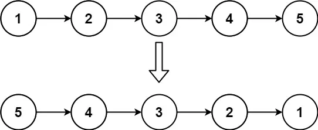

206. Reverse Linked List
考過的公司：Bytedance
Reverse Linked List
Question
Given the head of a singly linked list, reverse the list, and return the reversed list.

✍🏽 My Solution
Runtime: 0 ms, faster than 100.00% of Java online submissions for Reverse Linked List. Memory Usage: 42.7 MB, less than 62.57% of Java online submissions for Reverse Linked List.
class Solution {
public ListNode reverseList(ListNode head) {
ListNode prev = null;
ListNode cur = head;
while (cur != null) {
ListNode tmp = cur.next;
cur.next = prev;
prev = cur;
cur = tmp;
}
return prev;
}
}
🧠 Thought Process
- Why did I choose this particular implementation?
- 看leetcode題解
- What is the time/space complexity of my solution? How do I know?
- time: O(n)
- space: O(1)
- What mistakes did I make?
- 應該要寫 prev = curr ，但是都會寫錯成 prev = prev.next;
- What can I do next time to make sure I don't make the same mistakes again?
- 多練習囉
Solution #1 [王爭-創建結果鏈表，插入頭節點]
Runtime: 0 ms, faster than 100.00% of Java online submissions for Reverse Linked List. Memory Usage: 42.7 MB, less than 62.57% of Java online submissions for Reverse Linked List.
class Solution {
public ListNode reverseList(ListNode head) {
ListNode newHead = null;
ListNode p = head;
while (p != null) {
ListNode tmp = p.next;
p.next = newHead;
newHead = p;
p = tmp;
}
return newHead;
}
}
Explanation (in my words)
- How does their solution work?
- 創建結果鏈表，插入頭節點
- What is the space/time complexity of their solution?
- time: O(n)
- space: O(1)
Solution #2 [Recursive]
Runtime: 1 ms, faster than 10.79% of Java online submissions for Reverse Linked List.
Memory Usage: 42.6 MB, less than 68.08% of Java online submissions for Reverse Linked List.
class Solution {
public ListNode reverseList(ListNode head) {
if (head == null || head.next == null) {
return head;
}
//这里就是最后一个节点
ListNode newHead = reverseList(head.next); // head.next 作为剩余部分的头指针
// head.next 代表新链表的尾，将它的 next 置为 head，就是将 head 加到末尾了。
//这里请配合动画演示理解
//如果链表是 1->2->3->4->5，那么此时的newHead就是5
//而head是4，head的下一个是5，下下一个是空
//所以head.next.next 就是5->4
head.next.next = head;
//防止链表循环，需要将head.next设置为空
head.next = null;
//每层递归函数都返回newHead，也就是最后一个节点
return newHead;
}
}